1분 12초 · 콜드 오픈(작품 맨 앞 장면) · 보정 도중 멈춘 미완성본. 웹툰 38화에서 블라드가 「장미의 미소」 로비에서 잭의 부하 50여 명을 혼자 쓰러뜨리는 장면입니다. 소리(대사·효과음)와 타이틀 로고는 아직 넣지 않은 무음본이고, 마지막 0.5초 검은 화면 뒤에 타이틀이 들어갈 자리입니다.
이 장면을 어떤 순서와 도구로 만들었는지는 제작 과정 →에서 단계별로 보실 수 있습니다. 첫 시도부터 지금까지 영상이 어떻게 바뀌었는지는 버전 변화 →에 정리했습니다.
원작 소설 1~10화(웹툰 1~5화)를 일본어 더빙 TV 애니메이션 1화로 옮기고 있습니다. v3에서는 작품을 여는 콜드 오픈부터 다시 만들었습니다. 1화 본편은 어린 블라드가 빈민가에서 검의 길을 택하는 조용한 이야기라, 시작부터 긴장감을 주기 위해 한참 뒤 웹툰 38화의 전투(성장한 블라드가 혼자 50명을 상대하는 장면)를 맨 앞에 미리 보여 주는 구성으로 바꿨습니다. 같은 건물 「장미의 미소」가 콜드 오픈과 본편을 잇습니다.
원작 범위웹툰 38화「장미의 미소」 50인 전투
길이1분 12초콘티 80초 · 37컷 → 편집본 68초 + 검은 화면·타이틀
대사블라드 2줄 + 잔당 외침일본어 · 나레이션 없음
1
각색·각본
완료
원작 웹툰 38화(102칸) + 소설 53화구성 80초 하이라이트 몽타주(A안)
웹툰 38화 102칸을 비트로 나눈 뒤, 80초 안에 들어가도록 습격 → 포위 → 오라 폭발 → 몽타주(쇠그물·밧줄·궁수) → 정적 → 클로징의 여섯 덩어리로 골랐습니다. 유혈이 노골적인 칸(목 베기)은 실루엣·화면 밖 처리로 바꾸고, 나레이션은 빼고 잔당들의 짧은 외침을 넣었습니다.
대사
CO-1
블라드「迷わなくていい。……どうせ全員、斬るから。」
마요와나쿠테 이이. 도-세 젠인, 키루카라. · 고민 안 해도 돼. 어차피 전부 베어버릴 거니까.
CO-2
블라드(속마음)「続けなくちゃ。……今まで家、貸してやった分は払ってもらわないと。」
츠즈케나쿠챠. 이마마데 이에, 카시테 얏타 분와 하랏테 모라와나이토. · 계속해야지. 그동안 집 빌려준 값은 받아야 하니까.
잔당
「やれぇっ！」야레엣! · 내리쳐!
「下がるな！囲め！」사가루나! 카코메! · 물러서지 마! 포위해!
「網だ！鉄の網を投げろ！」아미다! 테츠노 아미오 나게로! · 그물이다! 쇠그물 던져!
외
2
콘티
완료
각본을 37컷·80초로 나누고, 컷마다 카메라 움직임(오빗·팔로우·크레인·휩 팬·크래시 줌)과 작화 지시(스매어·잔상·과장 원근)를 적었습니다. 영상 AI가 한 번에 12초씩 만들기 때문에 37컷을 7개 묶음(G1~G7)으로 나눴습니다.
묶음
내용
컷
길이
G1 습격
칼날이 쏟아짐 → 푸른 눈 → 회전 베기 → 걸어 나오며 벰
1–5
12초
G2 포위
원으로 둘러싼 무리 → 망설임 → 「어차피 전부 베어버릴 거니까」
6–10
12초
G3 오라 폭발
눈이 빛남 → 번쩍 → 무리를 가로지르며 벰
11–16
12초
G4 그물·기둥
쇠그물 X자 베기 → 기둥 뒤 → 계단 봉쇄 → 밧줄 절단
17–22
11초
G5 위층·화살
밧줄 타고 솟구침 → 회랑 돌파 → 화살 쳐내기
23–28
11초
G6 정적
물 마시기 → 물병 깨짐 → 속마음 → 칼
29–33
12초
G7 클로징
뒤따라 걷기 → 웃는 얼굴
34–35
6초
표는 옆으로 밀어서 보실 수 있습니다 →
3
애니매틱
생략
v3에서는 따로 애니매틱을 만들지 않고, 콘티 단계에서 대사를 먼저 녹음해 길이를 재고 컷 길이를 정했습니다. 대신 묶음마다 생성 → 편집을 빠르게 반복하며 박자를 맞췄습니다.
4
디자인(캐릭터)
완료
v2 디자인은 OpenAI 이미지 모델 한 가지로 만들어 선이 굵고 단순한 '일반 TV 애니' 느낌이었습니다. v3에서는 그림체를 더 끌어올리려고 도구를 역할별로 나눴습니다. 얼굴과 그림체는 니지저니(Midjourney의 애니 모델, Stylization 600), 전신과 의상은 OpenAI 이미지(GPT)로 만들고, 손가락·망토처럼 틀린 부분은 포토샵으로 고쳤습니다. 그리고 1화 기준 시트(성장 전)와 콜드 오픈판(38화, 성장 후)을 따로 만들었습니다.
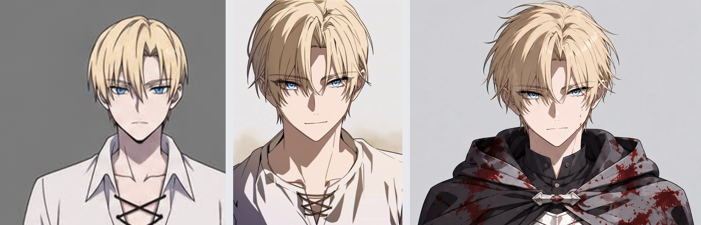
얼굴 비교 — 왼쪽 v2(GPT 한 가지) · 가운데 v3 기준 시트(니지 얼굴) · 오른쪽 v3 콜드 오픈판(38화). 눈의 반사광, 머리카락 결, 얼굴 그림자가 최신 애니에 가까워졌습니다.
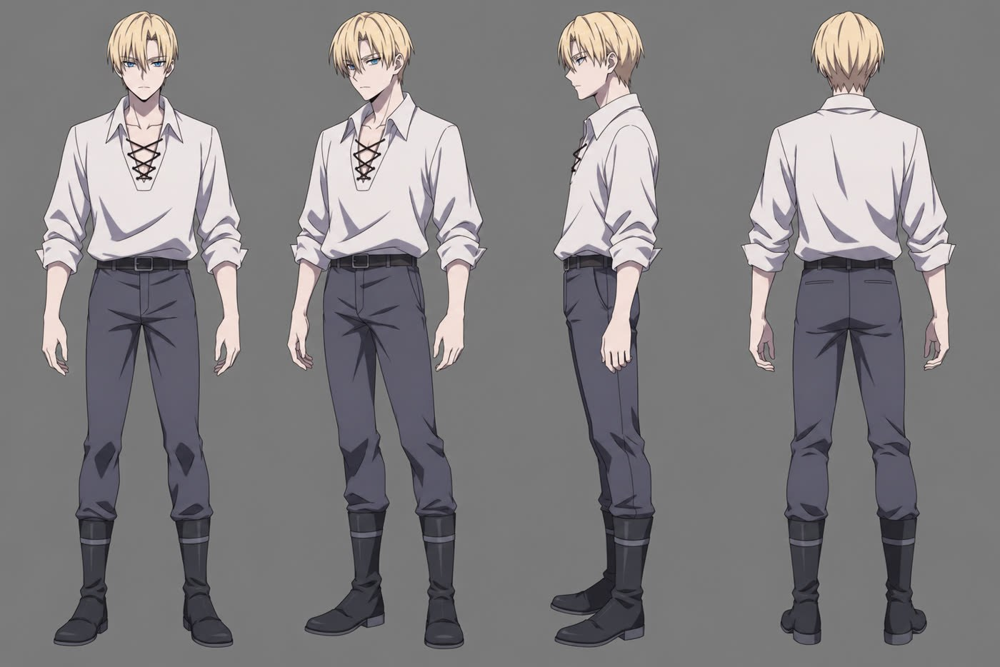
v2 블라드 · 셔츠 차림 턴어라운드
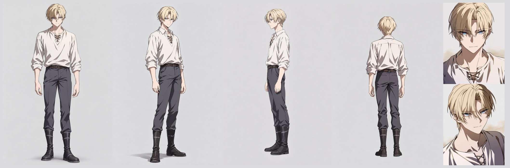
v3 블라드 기준 시트(성장 전 · 1화) — 전신 정면·45도·측면·뒷면 + 얼굴 정면·45도
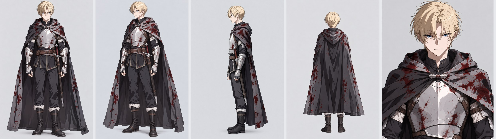
v3 콜드 오픈판(38화) — 피 묻은 망토, 가벼운 갑옷. 영상 AI의 '요소'로 등록해 매 컷 같은 모습을 유지
v2
v3
도구
OpenAI 이미지 한 가지
니지(얼굴·그림체) + GPT(전신·의상) + 포토샵(손·망토 수정)
그림체
선 굵고 단순한 TV 애니
섬세한 머리카락 결·눈 반사광, 최신 극장판에 가까운 셀 셰이딩
시트
인물마다 턴어라운드·표정
기준 시트(성장 전) + 장면판(콜드 오픈 성장 후) 분리
영상 AI에 넣는 법
디자인 시트 그림을 참조로
Dreamina 요소로 등록(정면·45도·측면·뒷면 4장)해 프롬프트에서 @이름으로 호출
군중(잭의 부하 50명)
—
에셋을 만들지 않고 프롬프트 묘사로 생성
표는 옆으로 밀어서 보실 수 있습니다 →
5
영상 생성
완료
도구 Dreamina · Seedance 2.5720p · 24fps저장한 테이크 20개(약 3분 47초), 버린 시험 생성 별도
v2에서는 컷마다 길이·샷·카메라·동작을 자세히 적었습니다. v3에서 같은 방식으로 액션을 하나하나 지정해 보니(예: 점프, 앞구르기, 지그재그) 오히려 작화가 뻣뻣해졌습니다. 그래서 장면의 큰 흐름(무엇이 일어나는지)과 움직임·카메라의 성격만 적고, 구체적인 동작은 영상 AI에 맡기는 '자유 연출' 방식으로 바꿨습니다. 그 결과 캐릭터 움직임이 훨씬 자연스럽고 작화가 좋아졌습니다. 피하고 싶은 것은 동작을 대신 지시하지 않고 '제외' 목록으로만 막았습니다.
Seedance가 만든 G3 원본 한 테이크(12초, 소리 뺌). 이렇게 나온 결과 중 쓸 구간만 골라 다음 단계에서 편집합니다.
프롬프트 일부(한국어 번역)
요소 @Vlad_ColdOpen = 블라드(짧은 금발, 맨머리, 가벼운 갑옷, 어깨에서 늘어진 긴 망토) · @Sword_Blacksmith = 대장장이의 검
장면 밤, 갱단 건물의 넓고 어둑한 목조 로비, 차가운 푸른 달빛, 옅은 안개. 깡패 약 50명이 홀을 가득 메움.
연출 블라드는 한 자리에 머물지 않는다. 카메라는 크고 빠르게 그를 쫓고, 거리가 계속 바뀐다. 액션은 짧은 샷들로.
비트 [3–8초] 블라드가 홀 끝에서 끝까지 무리 전체를 질주해 뚫고 지나가며 깡패들을 쓰러뜨린다.
제외 머리를 덮는 것, 일렁이거나 녹아내리는 얼굴, 바닥 자국, 빛나는 눈·광원 효과, 자막
빛 효과(눈 발광·오라·섬광)는 생성 단계에서 모두 금지하고 보정 단계에서 직접 넣었습니다. 영상 AI가 그린 빛은 모양과 위치를 고칠 수 없기 때문입니다.
6
편집(컷 리듬)
완료
묶음마다 2~3개씩 뽑은 테이크에서 좋은 구간만 골라 섞었습니다(예: G3는 서로 다른 세 테이크를 7조각으로 이음). 묶음과 묶음 사이는 디졸브 없이 하드컷으로만 잇고, 어색한 곳은 같은 자세·같은 방향의 프레임을 찾아 붙이거나, 시선 → 대상 → 시선 순서로 바꾸거나, 짧은 인서트(물병 클로즈업)를 새로 만들어 넣었습니다.
길이68초 → 72초보정 때 오라 폭발·그물 베기 장면을 늘려 3.3초 추가
컷 수약 45컷평균 약 1.5초
원칙하드컷만디졸브·페이드 없음, 정지된 꼬리는 자름
7
보정
드롭
보정은 세 개의 작업 방(G1–G2, G3–G4, G5–G7)으로 나눠 동시에 진행했습니다. 먼저 중앙에서 모든 방이 같이 쓸 기본 톤(달빛 하나, 채도 유지)과 오라의 모양을 정하고, 각 방은 자기 구간만 맡았습니다. 오라는 Fate(ufotable)식 촬영 처리를 기준으로, 칼은 그대로 두고 빛 안개·번짐·몸에 떨어지는 빛으로 표현했습니다. 달리는 블라드에게만 오라를 입히기 위해 AI 인물 분할(SAM2·YOLO)로 프레임마다 몸과 앞을 지나가는 적을 구분했습니다.
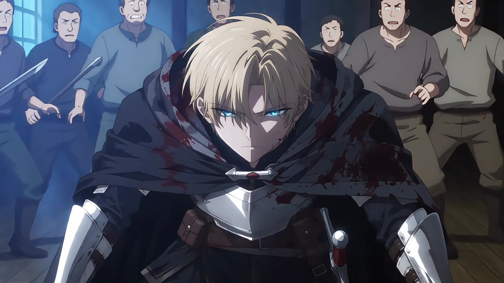
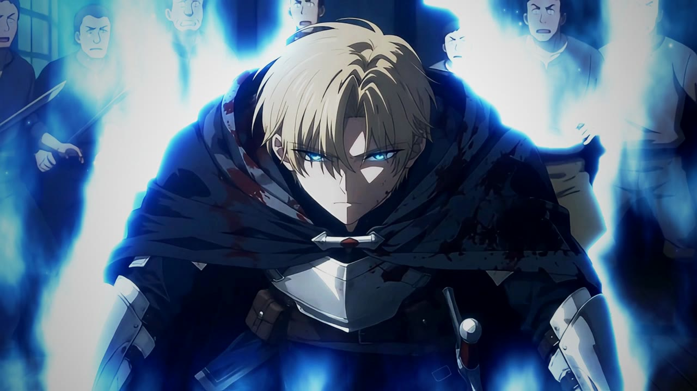
⟷보정 전보정 후
가운데 선을 좌우로 밀어 비교해 보세요. (G3 오라 폭발)
v3는 보정 단계에서 멈췄습니다(드롭). 미완성이라 오라를 비롯한 보정 퀄리티가 아직 부족하고, 아래 v4에서 영상을 다시 만들기로 했습니다.
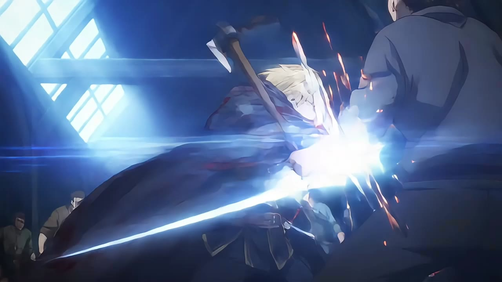
전
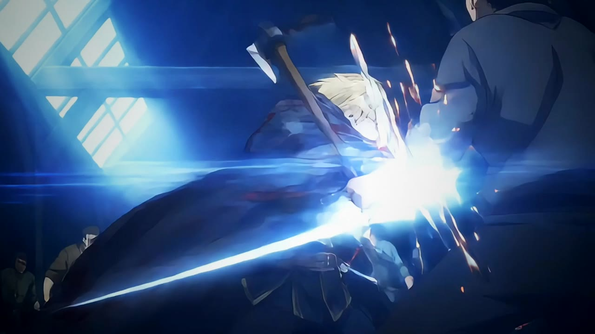
후
G1 첫 타격(히트스톱·섬광)
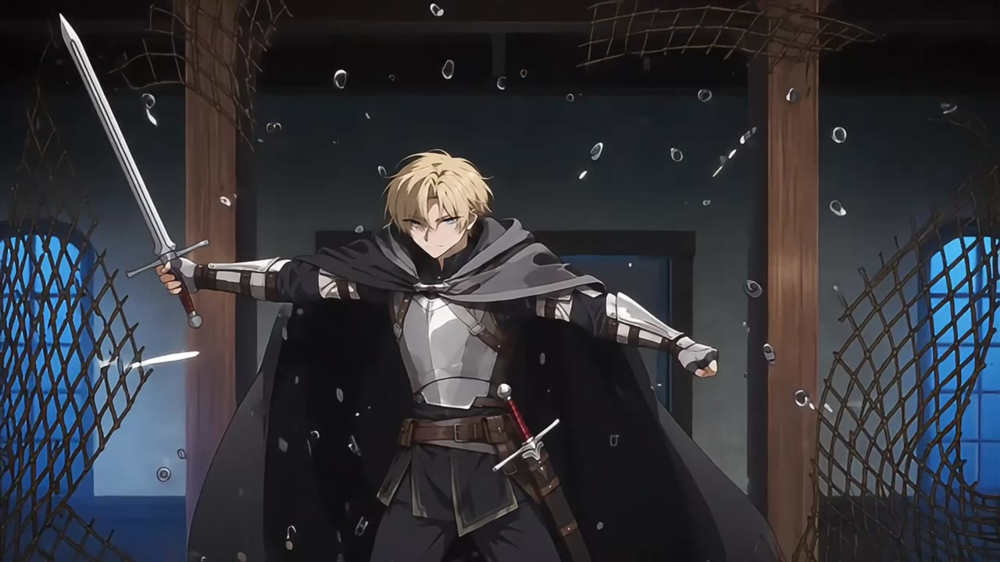
전
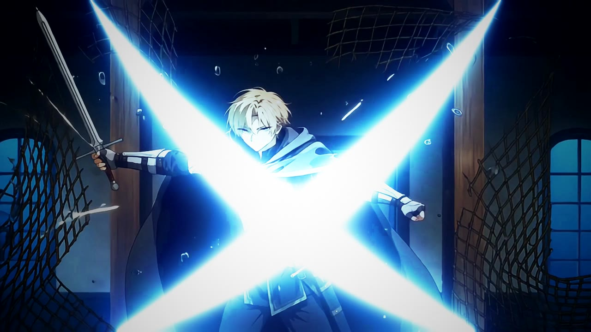
후
G4 쇠그물 X자 빛 검로
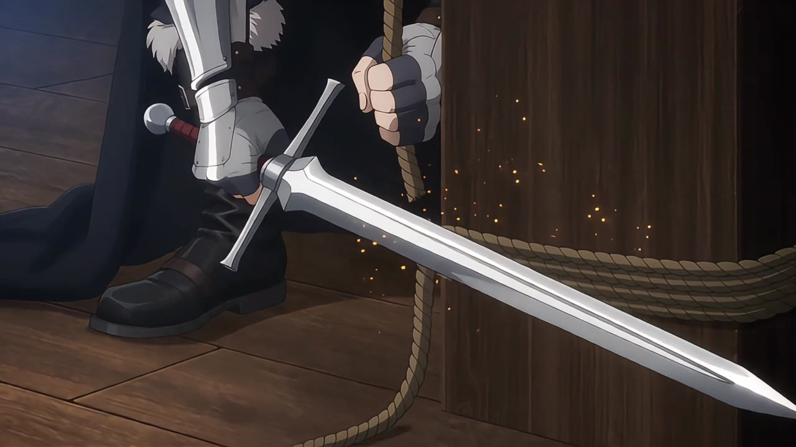
전
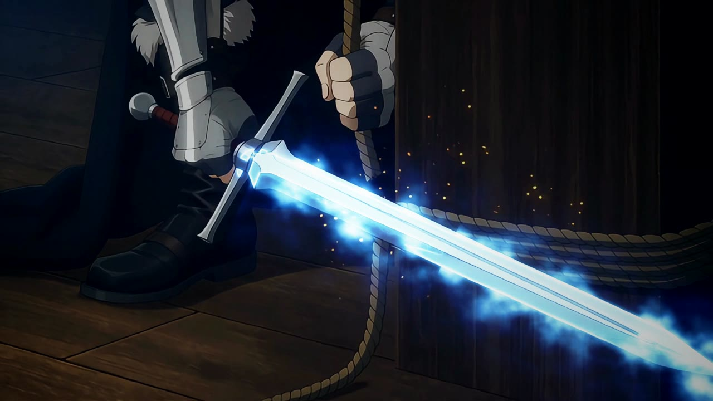
후
G4 밧줄 클로즈업 칼 오라
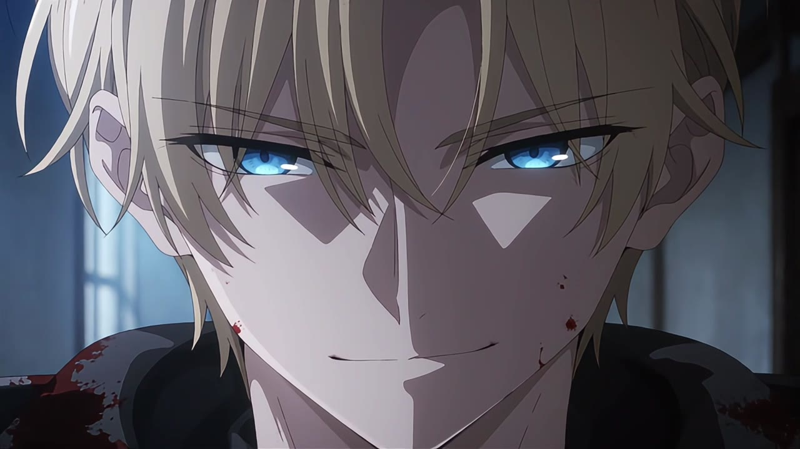
전
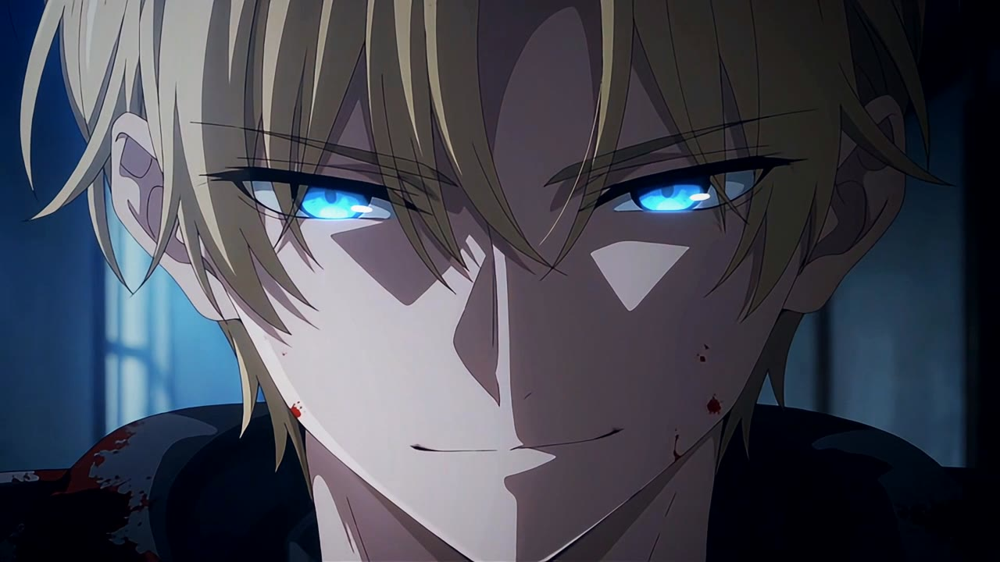
후
G7 웃는 얼굴 눈빛
공통 톤달빛 하나채도 1.15 · 그림자만 청색
오라Fate 촬영식몸 빛 안개 + 칼 빛 + 눈빛
금지불티·입김·별 문양단색 띠 오라·고르게 뿌린 입자
8
오디오
보류
v3에서는 소리를 그림이 확정된 뒤 장면 전체를 한 번에 작업하기로 했습니다. 영상 AI가 "효과음 없이"라고 해도 효과음을 계속 섞어 넣어, 대사만 따로 쓰기 어려웠기 때문입니다. 대사는 Dreamina의 AI 오디오(SeedAudio)로 목소리만 만든 뒤 입 모양 프레임에 맞춰 배치하는 방식을 시험해 두었고, 효과음은 원본 소리 분리 또는 영상 맞춤 효과음 AI(Mirelo)를 쓸 계획입니다. 다만 v4에서 영상을 다시 만들기로 해서, 소리는 v4 그림이 확정된 뒤 작업합니다.
Tools & Cost
쓴 도구와 비용
10월 한 달 동안 결제한 금액입니다. 달러 결제는 ElevenLabs 영수증 환율(1달러 = 약 1,394원)로 원화로 바꿨습니다. 처음에는 맞는 도구를 찾느라 여러 서비스를 시험했고, 지금은 아래 '실사용' 표시된 도구만 씁니다.
도구
용도
금액(원)
구분
Dreamina (Seedance 2.5 · Seedream)
영상·이미지 생성 · Standard 월 요금
21,500
시행착오
Dreamina
Advanced로 올림
225,403
시행착오
Dreamina
Ultra 월 요금(현재)
736,840
실사용
ElevenLabs Creator
일본어 더빙 · 음성 분리·변환
33,744
실사용
Claude Max (Anthropic)
각색·콘티·연출 감독, 편집·보정 작업 ($160.57, 플랜 변경분)
약 223,900
실사용
ChatGPT Plus
보조 작업 (월 $22)
약 30,700
실사용
OpenAI API
디자인 시트·애니매틱 그림 생성 (약 $30)
약 41,800
시행착오
Adobe Photoshop
웹툰 칸 글자 지우기·16:9 확장 (월 요금)
30,800
시행착오
Adobe 생성형 크레딧
위 작업의 생성형 채우기
약 100,000
시행착오
Midjourney Pro
디자인 시트 후보 — 잘못 결제, 거의 안 씀, 환불 거절 ($66)
약 92,000
시행착오
지금까지 합계
약 1,537,000
표는 옆으로 밀어서 보실 수 있습니다 →
시행착오에 든 돈약 51만 원도구를 찾고 바꾸는 과정에서 쓴 금액
앞으로 매달 드는 돈약 111만 원Dreamina Ultra 73.7만 · Claude Max 약 30.7만 · ElevenLabs 3.4만 · ChatGPT 3.1만
실제 제작에는 Dreamina, ElevenLabs, Claude, ChatGPT 구독료만 듭니다. Claude와 ChatGPT 구독은 다른 작업에도 함께 쓰고 있습니다.
영상 생성 크레딧
Dreamina Ultra월 59,000크레딧 (영상 1초에 16크레딧)
장면 2에 쓴 크레딧약 3,000약 2분 40초 분량
방법이 자리를 잡을수록 같은 크레딧으로 더 좋은 결과를 얻고 있어, 앞으로는 더 적은 크레딧으로 장면을 만들 수 있을 것으로 봅니다. 다만 좋은 컷을 얻으려면 그 장면에 여러 번 뽑아 고르는 크레딧을 충분히 써야 한다는 점은 변하지 않습니다.
v3에서 새로 쓴 것
도구
v3에서 한 일
비용
니지저니(Midjourney Pro, 기존 결제)
블라드 얼굴·그림체
기존 구독 안에서
Dreamina 요소(Elements)
캐릭터·검을 등록해 @로 호출
Ultra 구독 안에서
Dreamina SeedAudio
대사 목소리 소스 시험
1회 17크레딧
SAM2 · YOLO(오픈소스)
보정 때 인물 분할
무료(클라우드 작업 공간에서 실행)
ffmpeg · Python
편집·보정 전부
무료
표는 옆으로 밀어서 보실 수 있습니다 →
콜드 오픈 저장 테이크약 227초20개(720p)
콜드 오픈에 쓴 크레딧(추정)약 8,400 이상720p 1초 약 37크레딧 × 저장 테이크. 버린 시험 생성과 480p 초안은 빠져 있어 실제로는 더 많음
Trial & Error
시행착오
잘 안 된 것과 그래서 바꾼 것을 순서대로 적었습니다. 지금 방식은 대부분 이 과정에서 정해졌습니다.
v3 콜드 오픈
영상
액션을 자세히 지시하면 작화가 나빠짐
점프·앞구르기·지그재그 같은 동작을 컷마다 정하자 움직임이 뻣뻣해졌습니다. 큰 흐름만 주고 동작은 영상 AI에 맡기자 훨씬 좋아졌습니다.
영상
'하지 마라'고 쓴 단어가 오히려 나옴
"후드를 내려라"를 여러 번 쓰자 세 테이크 연속 후드를 썼고, "사슬"을 쓰자 샹들리에 대신 사슬을 잡았고, "네 조각으로 잘린다"는 그물이 깨지듯 부서지게 했습니다. 피하고 싶은 것은 단어 자체를 빼고 원하는 상태만 적었습니다.
영상
빛 효과는 생성에서 금지
레이저 같은 눈, 이상한 오라, 시계 모양으로 쓰러진 사람들이 나왔습니다. 빛은 보정에서 직접 넣기로 했습니다.
영상
"수십 명"이라 쓰면 10명만
"약 50명이 홀을 가득 메운 큰 무리"로 적어야 인원이 찼습니다.
영상
검열 오류
피·쓰러진 사람이 정지 화면에 오래 보이는 장면은 "부적절한 콘텐츠"로 막혔습니다. 피를 빼고 쓰러진 잔당을 '신음하며 꿈틀대는' 모습으로 바꿔 통과했습니다.
영상
칼이 두 자루
요소 그림 속 허리 칼집 때문에 손의 칼과 허리 칼이 같이 나왔습니다. "유일한 칼, 처음부터 끝까지 오른손"을 상태로 적었습니다.
편집
묶음 사이 연결이 부자연스러움
묶음마다 따로 생각해 콘티를 짜서 G와 G 사이가 자주 튀었습니다. 같은 자세 프레임 찾기, 순서 바꾸기, 인서트 새로 만들기로 메웠지만 근본 해결은 v4 과제입니다.
오디오
효과음 제어 불가
영상 AI가 효과음을 계속 넣어 대사만 뽑기 어려웠고, AI 오디오로 효과음을 새로 만들면 그림과 타이밍이 안 맞았습니다.
보정
오라 1차 불합격
처음 만든 오라는 "그림판으로 그린 것 같고 입자가 날파리 같다"는 평가를 받았습니다. Fate(ufotable) 촬영식으로 바꿔 통과했습니다.
보정
달리는 몸에 오라가 어긋남
손으로 찍은 윤곽은 몸과 어긋나고 앞을 지나가는 적 위에도 비쳤습니다. AI 인물 분할로 프레임마다 몸을 잡아 해결했습니다.
v2 때 장면 2 「대장간 앞의 별」
콘티
콘티 8번, 애니매틱 6번 수정
처음에는 5분 시연 영상으로 짰다가, 길이를 고정하면 연출이 상한다고 보고 한 화 분량으로 다시 짰습니다. 장면 7은 원작 4화 격전을 거의 그대로 살리도록 15컷을 지우고 45컷으로 새로 구성했습니다.
디자인
이미지 도구를 세 번 바꿈
ChatGPT 화면에서 만들다가 파일 업로드 제한에 막혔고, Midjourney는 결제했지만 거의 쓰지 못했습니다(환불 거절). 결국 OpenAI 이미지 API로 시트 62장을 한 번에 만들고, 같은 시트를 두 모델로 뽑아 비교해 골랐습니다.
디자인
웹툰 칸을 그대로 쓰려던 계획 폐기
포토샵으로 말풍선과 효과음 글자를 지우고 16:9로 넓혀 쓰려 했지만, 넓힌 부분이 실사처럼 나와 그림체가 어긋났습니다. 모든 컷을 새로 그리는 쪽으로 바꿨습니다.
영상
컷 그림을 첫 프레임으로 넣던 방식 → 디자인 시트만 참조
처음에는 애니매틱 그림을 컷마다 영상의 시작 프레임으로 넣고 4초씩 따로 만들었습니다. 디자인 시트만 참조로 주고 한 번에 여러 컷을 연출하게 바꾸자 컷 사이 연결과 연기가 훨씬 애니메이션다워졌습니다.
영상
영상 AI가 만든 오류들
소품을 지운 배경을 넣었더니 허공에 거대한 검을 새로 그렸고, 번개가 눈에 떨어지거나, 제미나가 송곳니 때문에 악역처럼 보이거나, 발자국에 장화 무늬가 찍혔습니다. 원인을 하나씩 찾아 프롬프트 규칙으로 만들었습니다(예: 소품은 배경에 그대로 두고 시선만 지시, 위치는 빨간 상자 가이드로 표시).
영상
Dreamina 요금제를 하루에 두 번 올림
영상 1초에 16크레딧이 들어, 작업량에 맞춰 Standard에서 같은 날 Advanced로, 닷새 뒤 Ultra로 올렸습니다. 처음부터 Ultra로 시작했다면 아낄 수 있었던 금액입니다.
편집
반응 컷을 넣었더니 어색함 → 다시 넣음
처음 넣은 반응 컷(v9)은 말끝을 0.05초 자르거나 구절 한가운데서 돌아와 어색했습니다. 숨 쉬는 지점에서 들어가고 다음 구절 직전에 돌아오는 규칙으로 다시 넣었습니다(v10).
보정
불티 효과 제거
대장간 분위기를 위해 아래에서 올라오는 불티를 넣었다가, 검토 후 최종본(v2)에서 뺐습니다. 마지막 하늘의 별 반짝임만 남겼습니다.
오디오
대사에 섞인 군중 소리
영상 AI가 대사와 함께 군중 웅성임을 만들어, 대사만 따로 쓰기 어려웠습니다. 음성 분리 모델 → ElevenLabs 음성 분리 → 음성 변환 순서로 걷어냈고, 그래도 남는 두 대사는 화면에 맞춰 영상 AI로 다시 받고 있습니다. 이후 생성에는 "대사만, 효과음·배경음 없음" 규칙을 넣었습니다.
설정
30fps → 24fps
처음엔 30fps로 작업했지만, 애니메이션 표준인 24fps로 생성·편집·보정을 전부 통일했습니다.
Versions
버전 변화
같은 작품을 지금까지 네 번 새로 시작했습니다. 버전마다 무엇을 시도했고, 무엇이 부족해서 다시 만들기로 했는지 순서대로 적었습니다.
v1
웹툰 그림체 그대로
2026.10 · 첫 시도
1분 3초 · 한국어 나레이션 · 첫 시도 영상
시도
웹툰의 그림체를 그대로 살려서, 웹툰을 바로 애니메이션으로 만들었습니다.
아쉬운 점
스케치와 손그림 특유의 난잡한 선, 세로로 그려진 구도가 움직이는 애니메이션과 맞지 않았습니다. 또 각색·각본, 콘티, 애니매틱 같은 애니메이션 제작 과정을 거치지 않고 웹툰을 바로 영상으로 옮겨서 부족한 부분이 많았습니다.
↓그래서 v2는 그림체를 애니메이션에 맞게 다시 그리고, 제작 과정을 처음부터 밟기로 했습니다.
v2
애니메이션 그림체와 제작 과정
2026.10 · 장면 2 「대장간 앞의 별」
2분 24초 · 일본어 더빙 · 한국어 자막 · 보정 완료본
시도
다른 애니메이션의 그림체를 참고해 캐릭터를 애니메이션에 맞게 다시 그렸습니다. 그리고 애니메이션 회사가 작품을 만들 때처럼 각색·각본, 콘티, 애니매틱 과정을 거쳐 만들었습니다.
아쉬운 점
컷 리듬과 연출 기획이 부족했습니다. 나중에 컷 수를 늘리려고 사이사이에 새 컷을 만들어 넣으니 컷 연결이 어색해졌고, 최신 애니메이션에 비해 퀄리티가 떨어진다고 느꼈습니다. 또 더빙 길이를 미리 생각하지 않고 짠 콘티라 영상 길이와 컷 수를 제대로 잡지 못했습니다.
↓그래서 v3는 콘티를 짜기 전에 컷 리듬과 더빙 길이부터 정하기로 했습니다.
v3
컷 리듬과 더빙 길이부터
보정 단계에서 드롭2026.10 · 콜드 오픈 「장미의 미소」
1분 12초 · 무음 · 보정 도중 멈춘 미완성본. 이 페이지의 제작 과정이 이 버전입니다.
시도
처음부터 컷 리듬과 더빙 길이를 생각해서 콘티를 만들고 시작합니다. 그림체도 일반적인 애니메이션보다 더 좋게 바꿔, 호평받는 최신 애니메이션과 비슷하거나 그 이상의 퀄리티를 내 보려고 합니다.
한 것
콜드 오픈(웹툰 38화 50인 전투) 1분 12초를 콘티 → 디자인 → 생성 → 편집까지 마치고, 보정 도중 멈췄습니다(드롭). 그래서 오라 등 보정 퀄리티는 아직 부족합니다. 캐릭터를 니지(얼굴)+GPT(전신)로 다시 그렸고, 동작은 영상 AI에 맡기는 자유 연출로 작화가 크게 좋아졌습니다.
아쉬운 점
묶음(G)과 묶음 사이 연결이 부드럽지 못했습니다. 콘티를 짤 때 G1, G2 … 각각만 생각하고, G1에서 G2로 어떻게 자연스럽게 넘어갈지 설계하지 않아 이음매가 자주 튀었습니다.
작화는 좋았지만 카메라가 너무 정적이었습니다. 동작을 영상 AI에 맡기니 움직임은 자연스러웠지만, 카메라 움직임은 아무리 여러 번 뽑아도 화려해지지 않았습니다.
액션 연출에 비해 컷 리듬이 느렸습니다.
↓그래서 v4는 좋은 액션 장면을 프레임 단위로 먼저 분석하고, 묶음 사이 연결과 카메라·컷 리듬까지 설계한 뒤 만들기로 했습니다.
v4
액션 연출을 프레임 단위로
준비 중2026.10
준비 중완성되면 이 자리에 영상을 올립니다.
시도
호평받은 TV 애니(나 혼자만 레벨업 2기 전투 장면)를 프레임 단위로 분석해 컷 길이, 카메라 움직임, 구도, 임팩트 연출을 수치로 정리하고, 그 기준으로 콘티를 다시 짭니다. 묶음 사이는 처음부터 '어떻게 넘어갈지'를 콘티에 함께 적고, 카메라가 크게 움직이는 컷은 영상 AI에 맡기지 않고 따로 설계합니다.
지금
참고 장면 분석 중입니다. 보정과 음향은 작화·연출·카메라·컷 리듬이 완성된 뒤에 다시 합니다.